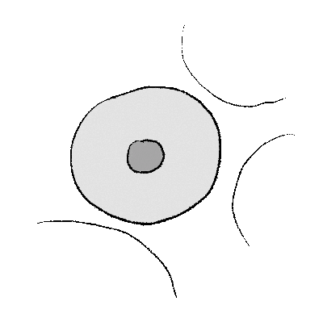
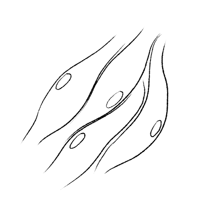
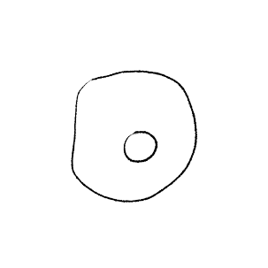
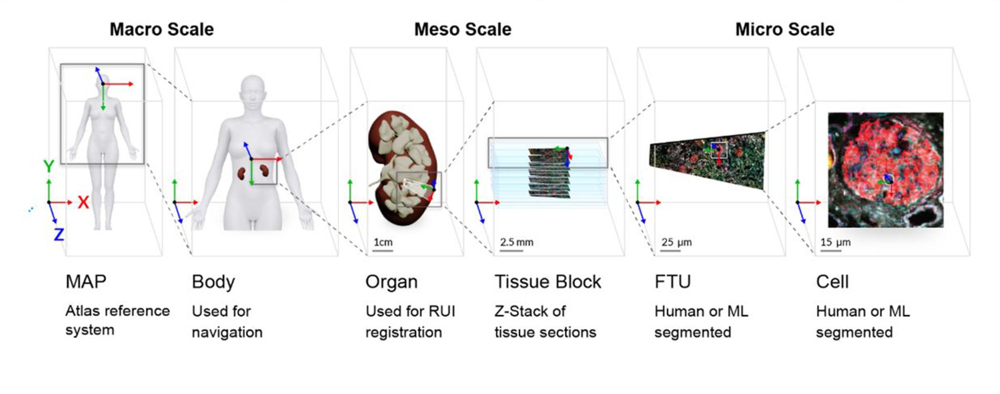

What is a Human Reference Atlas? ...and why do we really, really need one?
An introduction
There are 37 trillion cells in the human body, each with its own set of distinct characteristics and functions. But until recently, scientists had no good way of honing in on single cells to analyze their individual traits.
Over the past ten years, however, a boom of scientific and research technology has led to many advances in the realm of single-cell analysis. We can now see single cells and their environment with unprecedented detail, and we are learning more each day about how individual cells behave and function over time. Such research promises to lead to major advances in health care.
Single-cell analysis can reveal information about:
-

The mechanics of infection and the progress of disease
-

The regeneration of tissue
-

... And the changes our bodies experience as we age.
The problem we want to solve
Suppose Researcher A and Researcher B come across the same cell type in their own individual studies.
Because there exists no agreed-upon system of cell type identification and naming, it's possible that each researcher could give a different name to the very same thing.
This makes it extremely difficult to perform comparisons across studies since each researcher is speaking a different language.
Without the ability to compare experimental data, scientists will be unable to establish a shared knowledge bank upon which future studies can build.
How the HRA can help
Like other atlases, the HRA is a collection of maps that captures the human body's three-dimensional reality at differing scales: from the whole body on down to the level of organs, tissues, cell types, and biomarkers.

Throughout the atlas, a shared terminology and unifying spatial coordinate system is employed to ensure that anatomical structures and cell types are consistently named and aligned from map to map.
Importantly, for future research, the HRA provides a community-created, unified reference framework that allows data from different sources to be managed, compared, and efficiently utilized. The HRA's anatomical structures, cell types, and biomarkers (ASCT+B) tables act as a kind of Rosetta Stone across existing anatomical naming systems.
This allows researchers both to harmonize data from existing studies and to register new data using a shared, expert-approved consensus nomenclature. Likewise, the HRA's 3D anatomical reference objects allow researchers to spatially register new data and explore the relative locations of different cell types throughout the body.
Putting it all together
The final HRA atlas will encompass the three-dimensional (3D) organization of whole organs and thousands of anatomical structures, the interdependencies between trillions of cells, and the biomarkers that characterize and distinguish cell types.
It will make the human body computable, supporting spatial and semantic queries run over 3D structures linked to their scientific terminology and existing ontologies. It will establish a benchmark reference that helps us to understand how the healthy human body works and what changes during aging or disease.